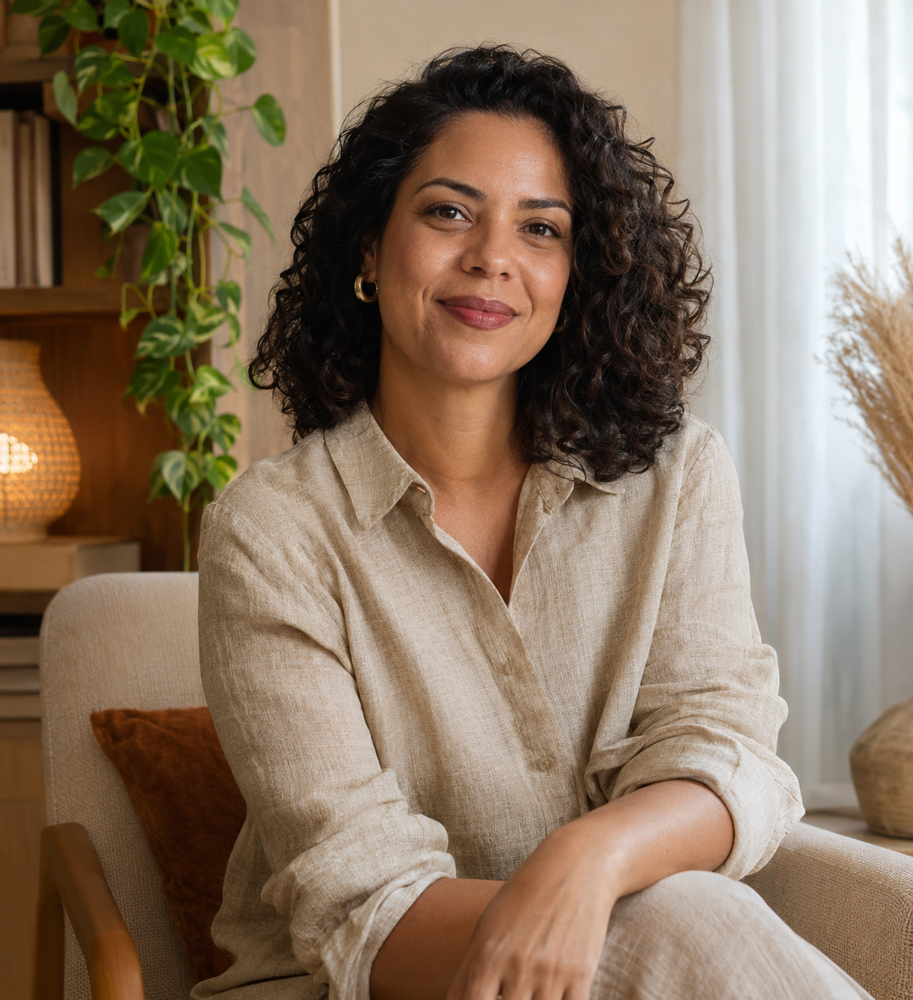
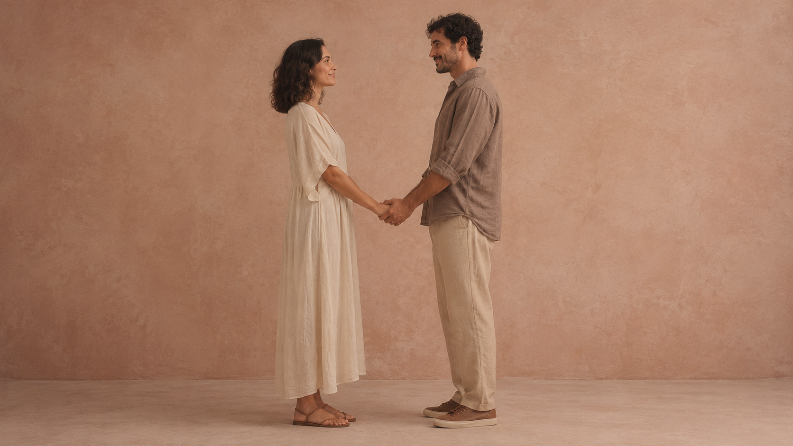
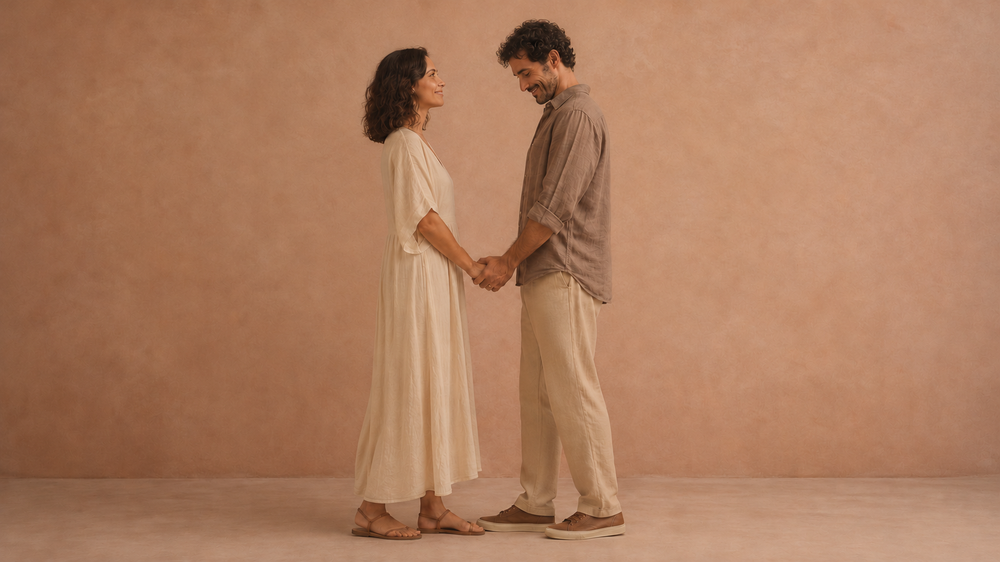
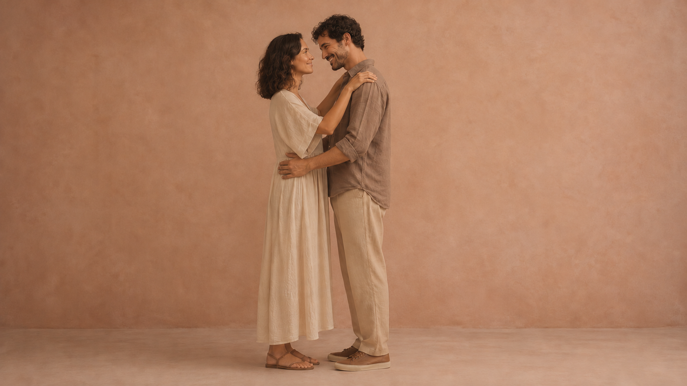
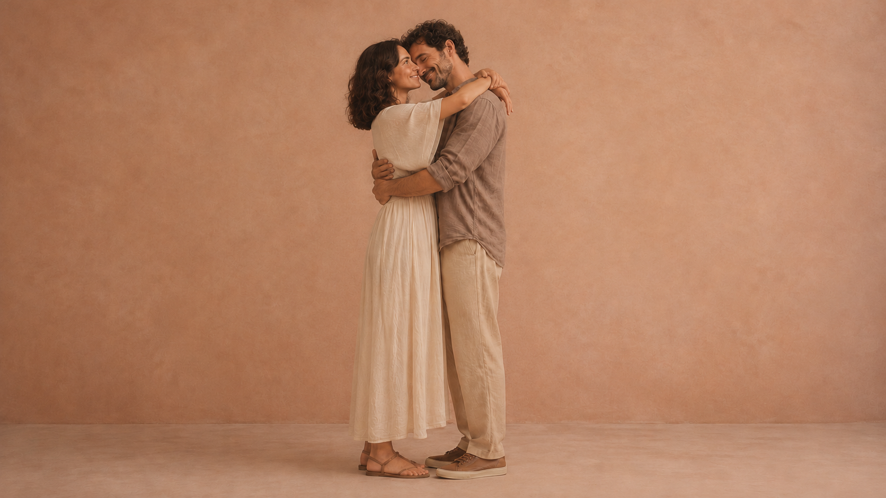

O ESPAÇO ENTRE NÓS ✳
O amor também
é um movimento.
Às vezes, um passo em direção ao outro muda tudo.
Sou Marina Duarte. Acredito na escuta como primeiro passo para cuidar das relações e construir novas formas de caminhar juntos.





02 / COMO CUIDAMOS
Não existe uma única maneira de se relacionar. Por isso, o cuidado começa ouvindo a sua história.
Um espaço para reconstruir diálogos, compreender desafios e cultivar a conexão.
Um convite ao autoconhecimento e a relações mais conscientes consigo e com o outro.
Um olhar cuidadoso para os laços familiares, afetivos e as mudanças da vida.
03 / NOSSA ABORDAGEM
Como duas trajetórias que se encontram, cada relação tem seu ritmo, sua história e suas próprias formas de conexão.
Nossa abordagem parte da escuta e do respeito para criar, em conjunto, caminhos possíveis. Sem fórmulas prontas: com cuidado para o que faz sentido para vocês.
Dê o primeiro passo ↗“Entre o que somos e o que podemos ser,
existe espaço para recomeçar.”
04 / VAMOS CONVERSAR?
Se algo por aqui fez sentido para você, que tal conhecer melhor o nosso espaço?
Entrar em contato ↗CONTATO ILUSTRATIVO PARA ESTE PROJETO CONCEITUAL.